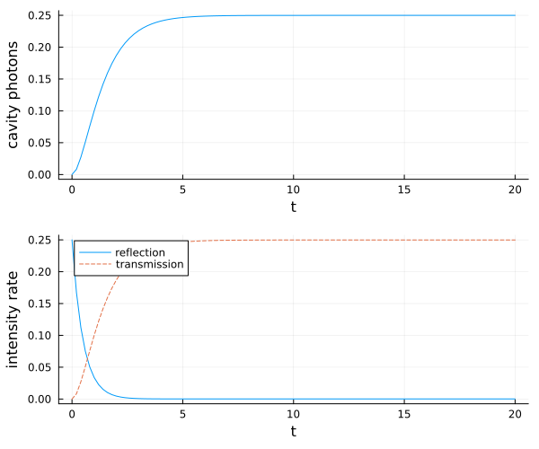
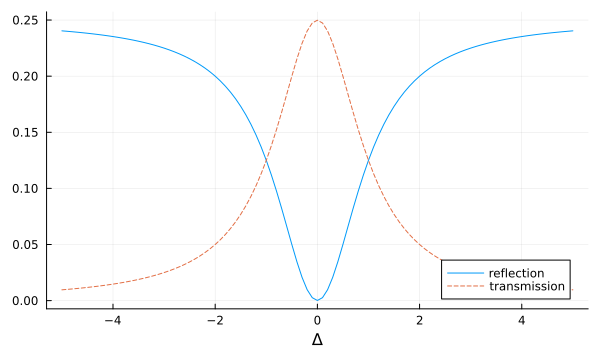
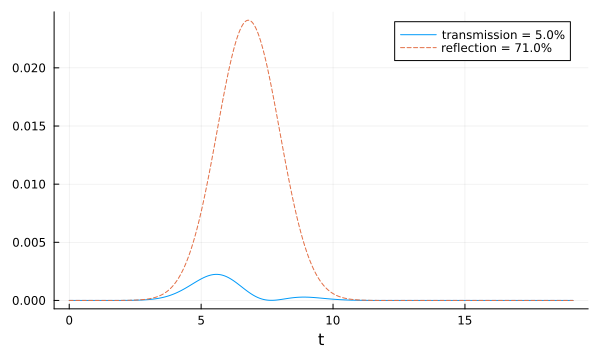

Two-sided Cavity with Atoms
In this example, we first simulate a continuously coherently driven empty two-sided cavity where we see the transmission and reflection spectrum. Afterwards, we couple $N=2$ two-level system resonantly to the cavity to investigate the transmission and reflection of a weak coherent pulse.
As usual, we start by loading the packages and specifying the system. We already include the Hilbert space for $N$ atoms here. However, for the numerical simulation of the empty cavity we provide a dictionary of the actual QuantumOptics.jl operators we want to use.
using QuantumInputOutput
using SecondQuantizedAlgebra
using QuantumOptics
using QuantumOpticsBase: dagger
using Plots@variables E::Real κ_L::Real κ_R::Real Δ::Real g::Real γ::Real
Natoms = 2
hc = FockSpace(:cavity)
ha(i) = NLevelSpace(Symbol("a_$i"), 2)
h = hc ⊗ tensor([ha(i) for i = 1:Natoms]...);
a = Destroy(h, :a, 1) # cavity
σ(α, i, j) = Transition(h, Symbol("σ_$(α)"), i, j, 1+α) # two-level atom α
∑σ(i, j) = sum(σ(α, i, j) for α = 1:Natoms) # collective atomic operatorEmpty two-sided cavity
We couple a classical drive into the cavity through the left mirror $(\kappa_L)$. The decay through the right mirror can be added in several ways: with the concatenate rule, including it already in the initial cavity SLH triple with a second Lindblad term or by simply including the decay term to the Lindblad by hand. In this example, we use the first option.
G_d = SLH(1, E, 0) # classical drive
H_cavity = -Δ*a'a
G_c_L = SLH(1, [√(κ_L)*a], H_cavity)
G_cav_L_drive = G_d ▷ G_c_L
G_c_R = SLH(1, [√(κ_R)*a], 0)
G_cav_L_R_drive = G_cav_L_drive ⊞ G_c_RNote that one needs to be careful to not double-count the Hamiltonian terms with the concatenation rule.
H1 = hamiltonian(G_cav_L_R_drive)\[0.5 ~ E ~ \sqrt{\mathtt{\kappa_{L}}} ~ \mathit{i} a - 0.5 ~ E ~ \sqrt{\mathtt{\kappa_{L}}} ~ \mathit{i} a^{\dagger} - \Delta a^{\dagger}a\]
L1_L = lindblad(G_cav_L_R_drive)[1]\[E + \sqrt{\mathtt{\kappa_{L}}} a\]
L1_R = lindblad(G_cav_L_R_drive)[2]\[\sqrt{\mathtt{\kappa_{R}}} a\]
Here, the usual classical cavity drive-term $\sqrt{\kappa_L} E (a^\dagger + a)$ appears as a combination of Hamiltonian and Lindblad term. To solve the dynamics of the system we translate the symbolic expressions into numeric operators (matrices) of QuantumOptics.jl. Since we do not want to include the basis of the atoms, we provide a dictionary of operators with the kwarg operators in the function to_numeric.
# numerical parameters
En = 0.5
κ_Rn = 1.0
κ_Ln = 1.0
Δn = 0.0
Δn_ls = [-5.0:0.1:5.0;];
lΔ=length(Δn_ls)
p_sym = [E, κ_R, κ_L, Δ]
p_num = [En, κ_Rn, κ_Ln, Δn]
dict_p1 = Dict(p_sym .=> p_num)
# cavity-only operators
bc1 = FockBasis(4)
a_QO = destroy(bc1)
ops_dict = Dict([a, a'] .=> [a_QO, dagger(a_QO)])
H1_QO = to_numeric(H1, bc1; parameter = dict_p1, operators = ops_dict)
L1_L_QO = to_numeric(L1_L, bc1; parameter = dict_p1, operators = ops_dict)
L1_R_QO = to_numeric(L1_R, bc1; parameter = dict_p1, operators = ops_dict)
J1_QO = [L1_L_QO, L1_R_QO]# time evolution
T = [0:0.01:1;]*20
ψ0 = fockstate(bc1, 0)
t_, ρt = timeevolution.master(T, ψ0, H1_QO, J1_QO)n_cavity = real(expect(a_QO'a_QO, ρt))
n_ref = real(expect(dagger(J1_QO[1])*J1_QO[1], ρt))
n_trans = real(expect(dagger(J1_QO[2])*J1_QO[2], ρt))p1 = plot(t_, n_cavity; label = "", xlabel = "t", ylabel = "cavity photons", grid = true)
p2 = plot(t_, n_ref; label = "reflection")
plot!(p2, t_, n_trans; label = "transmission", ls = :dash)
plot!(p2; xlabel = "t", ylabel = "intensity rate", grid = true, legend = :best)
plot(p1, p2; layout = (2, 1), size = (600, 500))
Now we scan the laser-cavity detuning $\Delta$ to plot the transmission and reflection spectrum.
dict_p_Δ(Δn) = Dict(p_sym .=> [En, κ_Rn, κ_Ln, Δn])
H1_QO_Δ_(Δn) = to_numeric(H1, bc1; parameter = dict_p_Δ(Δn), operators = ops_dict)
n_ref_Δ = zeros(lΔ)
n_trans_Δ = zeros(lΔ)
for it = 1:lΔ
Δn_ = Δn_ls[it]
t_it, ρt_it = timeevolution.master(T, ψ0, H1_QO_Δ_(Δn_), J1_QO)
n_ref_Δ[it] = real(expect(dagger(J1_QO[1])*J1_QO[1], ρt_it[end]))
n_trans_Δ[it] = real(expect(dagger(J1_QO[2])*J1_QO[2], ρt_it[end]))
endp = plot(Δn_ls, n_ref_Δ; label = "reflection")
plot!(p, Δn_ls, n_trans_Δ; label = "transmission", ls = :dash)
plot!(p; xlabel = "Δ", grid = true, legend = :best, size = (600, 350))
p
Two-sided cavity with atoms
In the following, we include $N=2$ two-level atoms in the cavity and simulate the transmission and reflection of a coherent Gaussian pulse with a mean photon number of $|\alpha|^2 = 1/10$. We assume that the atoms are on resonance with the cavity, i.e. $\Delta = \Delta_c = \Delta_a$.
H_ac = -Δ*(a'a + ∑σ(2, 2)) + g*(a'∑σ(1, 2) + a*∑σ(2, 1))
G_ac = SLH(1, √κ_L*a, H_ac)
G_ac_drive = (G_d ▷ G_ac) ⊞ SLH(1, √κ_R*a, 0)H2 = G_ac_drive.hamiltonian\[0.5 ~ E ~ \sqrt{\mathtt{\kappa_{L}}} ~ \mathit{i} a - 0.5 ~ E ~ \sqrt{\mathtt{\kappa_{L}}} ~ \mathit{i} a^{\dagger} - \Delta {\sigma_{\mathrm{1}}}^{{22}} - \Delta {\sigma_{\mathrm{2}}}^{{22}} + g a{\sigma_{\mathrm{1}}}^{{21}} + g a{\sigma_{\mathrm{2}}}^{{21}} - \Delta a^{\dagger}a + g a^{\dagger}{\sigma_{\mathrm{1}}}^{{12}} + g a^{\dagger}{\sigma_{\mathrm{2}}}^{{12}}\]
L2_L = G_ac_drive.lindblad[1]\[E + \sqrt{\mathtt{\kappa_{L}}} a\]
L2_R = G_ac_drive.lindblad[2]\[\sqrt{\mathtt{\kappa_{R}}} a\]
# numerical parameter
κ_Rn2 = κ_Ln2 = 2π*1
gn2 = 2π*0.4
Δn2 = 0.0
γn = 2π*0.1
p_sym2 = [κ_R, κ_L, Δ, g]
p_num2 = [κ_Rn2, κ_Ln2, Δn2, gn2]
σp = 10/κ_Ln2 # pulse width
Tp = 4σp # pulse peak
Tend = 3Tp
α0 = √(0.1) # √ of total photon number
Ω0 = α0*2*√(κ_Ln2)/(π^(1/4)*√(σp))
Ω1(t) = Ω0/2*exp(-(t-Tp)^2 / (2*σp^2))
E_t(t) = Ω1(t)/√(κ_Ln2)
T = [0:0.001:1;]*Tend
ΔT = T[2] - T[1]
n_pulse = round(sum(abs2.(E_t.(T)))*ΔT, digits = 7)
@show n_pulse
dict_p2 = Dict(p_sym2 .=> p_num2)
dict_p_t2 = Dict([E, conj(E)] .=> [E_t, E_t])n_pulse = 0.1# numeric bases
bc1 = FockBasis(4)
ba = NLevelBasis(2)
b = bc1 ⊗ tensor([ba for i = 1:Natoms]...)
a_QO2 = to_numeric(a, b)
σ_QO(α, i, j) = to_numeric(σ(α, i, j), b)
# translate to numeric Hamiltonian and Lindblad
H_QO = to_numeric(H2, b; parameter = dict_p2, time_parameter = dict_p_t2)
L2_L_QO = to_numeric(L2_L, b; parameter = dict_p2, time_parameter = dict_p_t2)
L2_R_QO = to_numeric(L2_R, b; parameter = dict_p2)
# additional atomic decay into free space
J_add = [√(γn)*σ_QO(α, 1, 2) for α = 1:Natoms]
function input_output(t, ρ)
H = H_QO(t)
J = [L2_L_QO(t), L2_R_QO, J_add...]
return H, J, dagger.(J)
end# time evolution
ψ0 = fockstate(bc1, 0) ⊗ tensor([nlevelstate(ba, 1) for i = 1:Natoms]...)
t2_, ρt2 = timeevolution.master_dynamic(T, ψ0, input_output)L2_L_QO_dag(t) = dagger(L2_L_QO(t))
l_t = length(t2_)
n_trans2 = zeros(l_t)
n_ref2 = zeros(l_t)
for it = 1:l_t
n_trans2[it] = abs(expect(dagger(L2_R_QO)*L2_R_QO, ρt2[it]))
n_ref2[it] = abs(expect(L2_L_QO_dag(t2_[it])*L2_L_QO(t2_[it]), ρt2[it]))
end
p = plot(
t2_,
n_trans2;
label = "transmission = $(round(sum(n_trans2) * ΔT / n_pulse * 100))%",
)
plot!(
p,
t2_,
n_ref2;
ls = :dash,
label = "reflection = $(round(sum(n_ref2) * ΔT / n_pulse * 100))%",
)
plot!(p; xlabel = "t", legend = :best, grid = true, size = (600, 350))
p
We can see that only about 5% is transmitted and 71% are reflected. The rest is scattered into free space by the atoms.
Package versions
These results were obtained using the following versions:
using InteractiveUtils
versioninfo()
using Pkg
Pkg.status(
[
"QuantumInputOutput",
"SecondQuantizedAlgebra",
"QuantumOptics",
"QuantumCumulants",
"Plots",
],
mode = PKGMODE_MANIFEST,
)Julia Version 1.12.6
Commit 15346901f00 (2026-04-09 19:20 UTC)
Build Info:
Official https://julialang.org release
Platform Info:
OS: Linux (x86_64-linux-gnu)
CPU: 4 × AMD EPYC 9V74 80-Core Processor
WORD_SIZE: 64
LLVM: libLLVM-18.1.7 (ORCJIT, znver4)
GC: Built with stock GC
Threads: 4 default, 1 interactive, 4 GC (on 4 virtual cores)
Environment:
JULIA_PKG_SERVER_REGISTRY_PREFERENCE = eager
JULIA_DEBUG = Documenter
JULIA_NUM_THREADS = auto
Status `~/work/QuantumInputOutput.jl/QuantumInputOutput.jl/docs/Manifest.toml`
[91a5bcdd] Plots v1.41.6
[35bcea6d] QuantumCumulants v0.7.0
[18f9eda6] QuantumInputOutput v0.4.0 `~/work/QuantumInputOutput.jl/QuantumInputOutput.jl`
[6e0679c1] QuantumOptics v1.2.6
[f7aa4685] SecondQuantizedAlgebra v0.10.0This page was generated using Literate.jl.